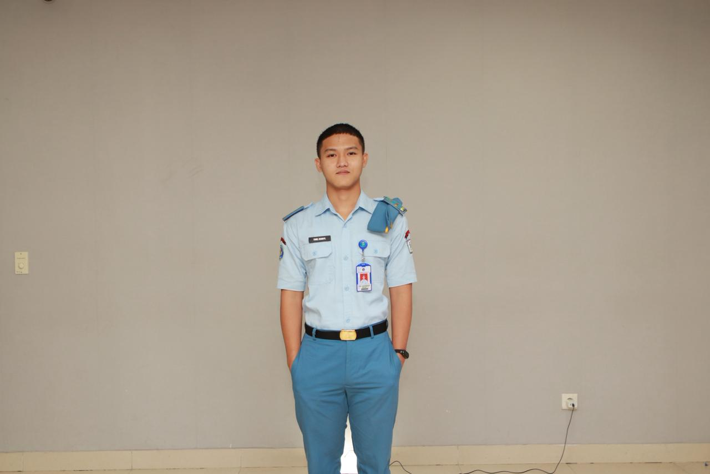

Agroglobal Interactive Dashboard • Advokasi Digital

Calon Putra Daerah / Agent of Change
Nanas Kaleng
Terbanggi Besar
Negara Tujuan
Ekspor Global
Pasokan Kopi
Robusta Nasional
Paradoks Geografis: Banyak orang luar mengira Lampung hanya hutan belantara terpencil. Padahal, bumi Lampung adalah raksasa ekonomi tak terlihat yang menyuplai komoditas pangan hingga ke pasar Eropa, Amerika, dan Asia secara modern sejak berabad-abad lalu.